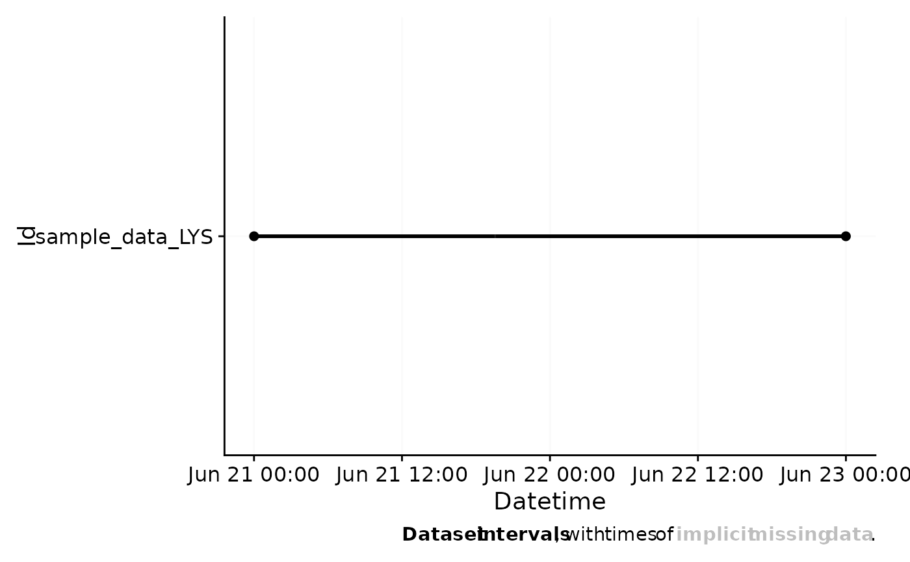

Adjust device imports or make your own
Arguments
- import_expr
A named list of import expressions. The basis for
LightLogR's import functions is the included datasetll_import_expr. If this function were to be given that exact dataset, and bound to a variable calledimport, it would be identical to theimportfunction. Seedetails.
Details
This function should only be used with some knowledge of how
expressions work in R. The minimal required output for an expression to work
as expected, it must lead to a data frame containing a Datetime column with
the correct time zone. It has access to all arguments defined in the
description of import_Dataset(). The ... argument should be passed to
whatever csv reader function is used, so that it works as expected. Look at
ll_import_expr$LYS for a quite minimal example.
Examples
#create a new import function for the LYS device, same as the old
new_import <- import_adjustment(ll_import_expr)
#the new one is identical to the old one in terms of the function body
identical(body(import$LYS), body(new_import$LYS))
#> [1] TRUE
#change the import expression for the LYS device to add a message at the top
ll_import_expr$LYS[[4]] <-
rlang::expr({ cat("**This is a new import function**\n")
tmp
})
new_import <- import_adjustment(ll_import_expr)
filepath <- system.file("extdata/sample_data_LYS.csv", package = "LightLogR")
#Now, a message is printed when the import function is called
new_import <- new_import$LYS(filepath)
#> **This is a new import function**
#>
#> Successfully read in 11'422 observations across 1 Ids from 1 LYS-file(s).
#> Timezone set is UTC.
#>
#> First Observation: 2023-06-21 00:00:12
#> Last Observation: 2023-06-22 23:59:48
#> Timespan: 2 days
#>
#> Observation intervals:
#> Id interval.time n pct
#> 1 sample_data_LYS 15s 10015 87.689%
#> 2 sample_data_LYS 16s 1367 11.969%
#> 3 sample_data_LYS 17s 23 0.201%
#> 4 sample_data_LYS 18s 16 0.140%
